Chapter 11 Clustering
One application of association matrices is clustering. Clustering highlights structures in the data by partitioning either the objects or the descriptors. As a result, similar objects are combined into groups, allowing distinctions – or contrasts – between groups to be identified. One goal of ecologists could be to divide a set of sites into groups with respect to their environmental conditions or their community composition.
Clustering results are often represented as dendrograms (trees), where objects agglomerate into groups. There are several families of clustering methods, but for the purpose of this workshop, we will present an overview of three hierarchical agglomerative clustering methods: single linkage, complete linkage, and Ward’s minimum variance clustering. See Chapter 8 of Legendre and Legendre (2012) for more details on the different families of clustering methods.
In hierarchical methods, elements of lower clusters (or groups) become members of larger, higher ranking clusters, e.g. species, genus, family, order. Prior to clustering, one needs to create an association matrix among the objects. Distance matrix is the default choice of clustering functions in R. The association matrix is first sorted in increasing distance order (or decreasing similarities). Then, groups are formed hierarchically following rules specific to each method.
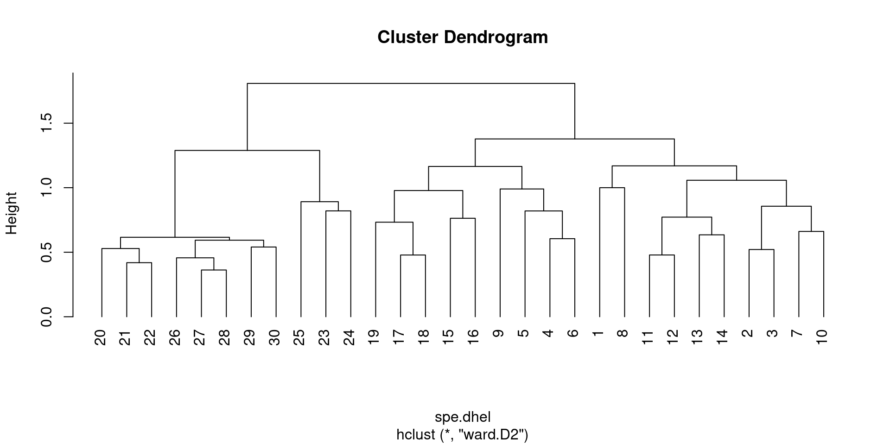
R has several built-in functions for computing agglomerative clusters and visualizing the results. Some of the most commonly used functions are:
hclust()function in thestatspackage: This function computes hierarchical clustering using a variety of linkage methods, including single, complete, average, and Ward’s minimum variance. The output is adendrogramobject that can be plotted using theplot()function.agnes()function in theclusterpackage: This function also computes hierarchical clustering using several linkage methods, but it can handle larger datasets thanhclust(). The output is an object of class “agnes” that can be plotted using theplot()function.dendextend()package: This package provides several functions for manipulating and visualizing dendrograms, includingcolor_branches(),rotate()andcutree().ggdendro()function in theggdendropackage: This function creates a dendrogram plot usingggplot2syntax and provides more customization options than the baseplot()function.
Below, we will learn several types of clustering algorithms, while applying the simplest function in R to produce them, hclust().
11.1 Single linkage agglomerative clustering
Single linkage agglomerative clustering is a hierarchical clustering algorithm that works by iteratively merging the two closest clusters based on the minimum distance between their closest members. The steps involved in it are:
- Start with assigning each observation to its own cluster.
- Compute the distance between all pairs of clusters using a chosen distance metric (e.g., Euclidean distance).
- Merge the two closest clusters into a single cluster.
- Recompute the distance between the new cluster and all remaining clusters.
- Repeat steps 3 and 4 until all observations belong to a single cluster, or until a pre-defined number of clusters has been reached.
In single linkage agglomerative clustering, the distance between two clusters is defined as the minimum distance between any two points in the clusters. This is why it’s also called the “nearest neighbor” or “single linkage” clustering.
One disadvantage of single linkage agglomerative clustering is that it can produce long, trailing clusters that do not represent well-defined groups, also known as chaining phenomenon. This can be overcome by using other linkage criteria such as complete linkage, average linkage, or Ward’s linkage.
# generate some sample data
set.seed(123)
x <- matrix(rnorm(20), ncol = 2)
# perform single linkage agglomerative clustering
hc <- hclust(dist(x), method = "single")
# plot the dendrogram
plot(hc, main = "Dendrogram of Single Linkage Agglomerative Clustering",
hang = -1)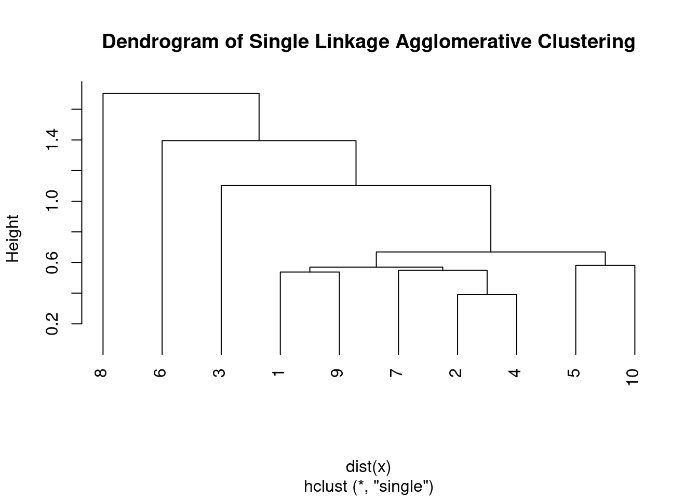
11.2 Complete linkage agglomerative clustering
Complete linkage agglomerative clustering is another hierarchical clustering algorithm that works by iteratively merging the two closest clusters based on the maximum distance between their furthest members.
The steps involved in the complete linkage agglomerative clustering algorithm are:
- Start with assigning each observation to its own cluster.
- Compute the distance between all pairs of clusters using a chosen distance metric (e.g., Euclidean distance).
- Merge the two closest clusters into a single cluster.
- Recompute the distance between the new cluster and all remaining clusters.
- Repeat steps 3 and 4 until all observations belong to a single cluster, or until a pre-defined number of clusters has been reached.
- In complete linkage agglomerative clustering, the distance between two clusters is defined as the maximum distance between any two points in the clusters. This is why it’s also called the “furthest neighbor” or “complete linkage” clustering.
Compared to single linkage agglomerative clustering, complete linkage tends to produce more compact, spherical clusters that are less prone to the chaining phenomenon. However, it’s more sensitive to outliers and can produce unbalanced clusters if there are extreme values or noise in the data.
# perform complete linkage agglomerative clustering
hc <- hclust(dist(x), method = "complete")
# plot the dendrogram
plot(hc, main = "Dendrogram of Complete Linkage Agglomerative Clustering",
hang = -1)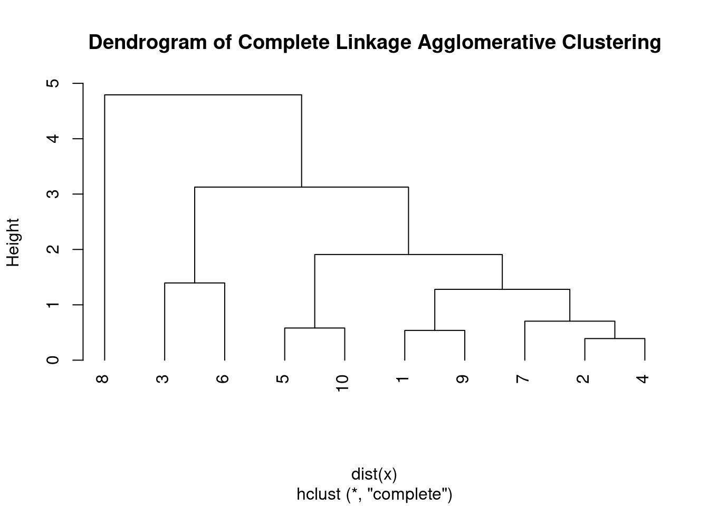
11.3 Unweighted Pair Group Method with Arithmetic Mean (UPGMA)
Another hierarchical clustering algorithm that is commonly used in bioinformatics and evolutionary biology is the Unweighted Pair Group Method with Arithmetic Mean (UPGMA).
The steps involved in the UPGMA algorithm:
- Begin by assigning each data point to its own cluster.
- Compute the pairwise distances between all clusters based on the distance metric of choice, such as Euclidean distance, Manhattan distance, or Pearson correlation.
- Find the two closest clusters based on the pairwise distances and merge them into a single cluster. The distance between the two clusters is calculated as the average of the pairwise distances between their members.
- Update the pairwise distances between the new cluster and all remaining clusters. The distance between the new cluster and any other cluster is calculated as the average of the pairwise distances between the members of the new cluster and the members of the other cluster.
- Repeat steps 3 and 4 until all data points belong to a single cluster.
# perform Unweighted Pair Group Method with Arithmetic Mean
# clustering
hc <- hclust(dist(x), method = "average")
# plot the dendrogram
plot(hc, main = "Dendrogram of \nUnweighted Pair Group Method with Arithmetic Mean \nAgglomerative Clustering",
hang = -1)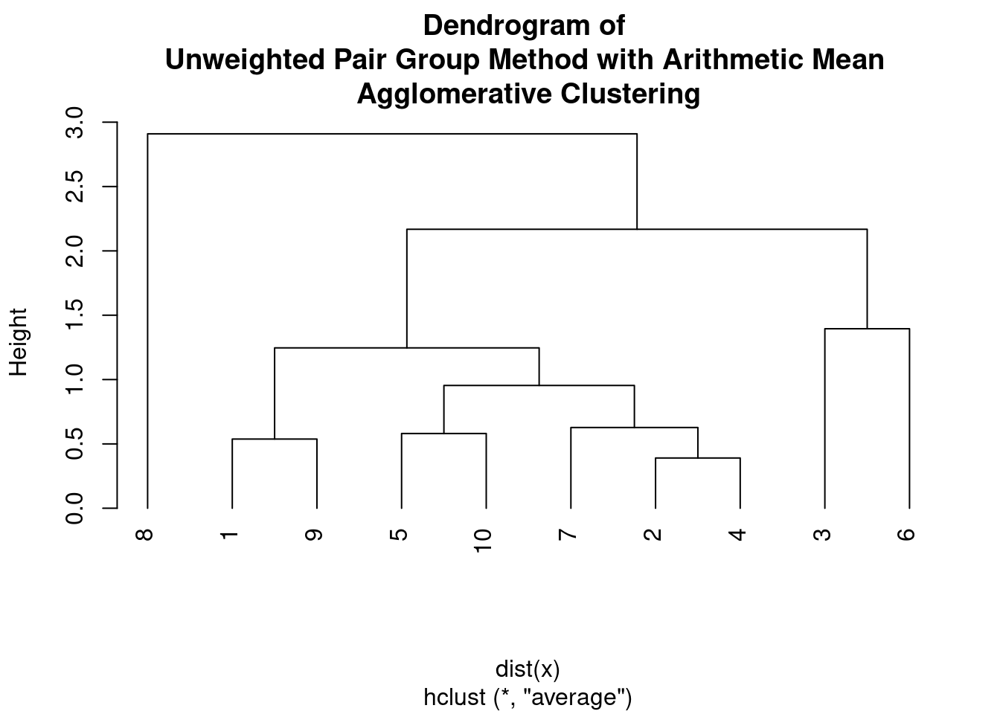
The UPGMA algorithm assumes a constant rate of evolution, and therefore it is often used to construct phylogenetic trees from genetic or molecular data. The output of UPGMA is a dendrogram, which shows the hierarchical structure of the clusters.
A limitation of UPGMA is that it can be sensitive to outliers and can produce biased results if there are non-random patterns of missing data or convergent evolution. Additionally, it is an unweighted method, meaning that it assumes all data points are equally important, which may not always be the case.
11.4 Weighted Pair Group Method with Arithmetic Mean (WPGMA)
The Weighted Pair Group Method with Arithmetic Mean (WPGMA) is similar to UPGMA, but but it takes into account the weights of the observations (e.g., when some observations are more important than others). The algorithm works as follows:
- Begin by assigning each data point to its own cluster.
- Compute the pairwise distances between all clusters based on the distance metric of choice, such as Euclidean distance, Manhattan distance, or Pearson correlation.
- Find the two closest clusters based on the pairwise distances and merge them into a single cluster. The distance between the two clusters is calculated as the average of the pairwise distances between their members, weighted by their respective weights.
- Update the pairwise distances between the new cluster and all remaining clusters. The distance between the new cluster and any other cluster is calculated as the average of the pairwise distances between the members of the new cluster and the members of the other cluster, weighted by their respective weights.
- Repeat steps 3 and 4 until all data points belong to a single cluster.
# perform Weighted Pair Group Method with Arithmetic Mean
# clustering
hc <- hclust(dist(x), method = "mcquitty")
# plot the dendrogram
plot(hc, main = "Dendrogram of \nWeighted Pair Group Method with Arithmetic Mean \nAgglomerative Clustering",
hang = -1)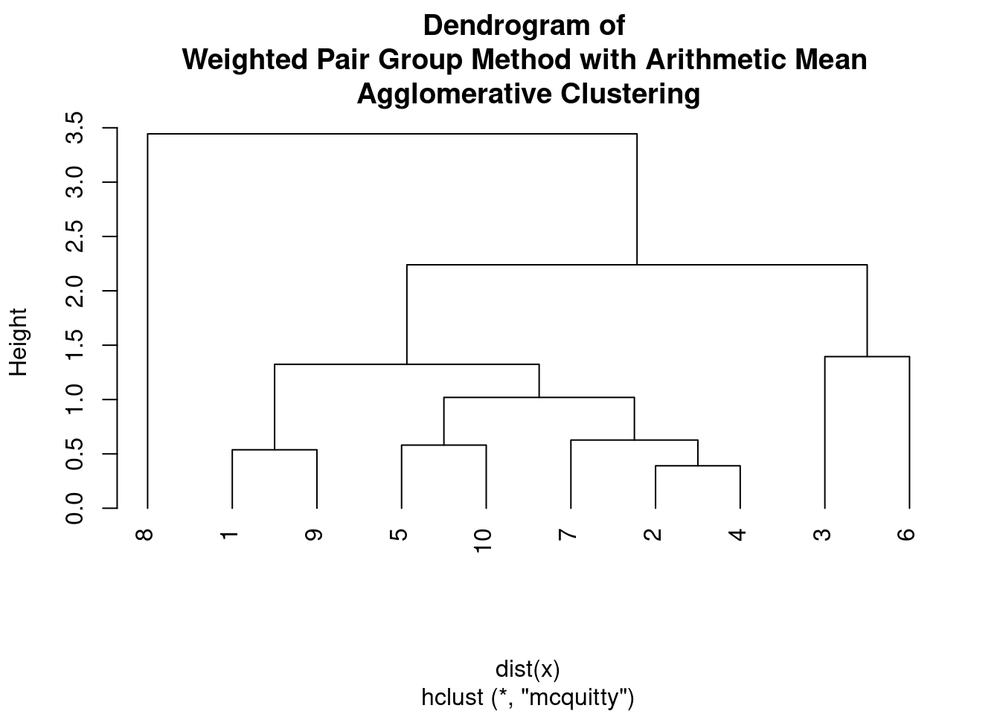
11.5 Ward’s minimum variance
Ward’s minimum variance method is a hierarchical clustering algorithm that aims to minimize the variance within each cluster by merging clusters that minimize the increase in the total sum of squared distances. The algorithm works as follows:
- Begin by assigning each data point to its own cluster.
- Compute the distance between each pair of clusters using a chosen distance metric, such as Euclidean distance or Manhattan distance.
- Merge the two clusters that minimize the increase in the total sum of squared distances. The increase in the sum of squared distances is calculated as the sum of squared distances within each cluster plus the squared distance between the centroids of the two clusters multiplied by the number of data points in each cluster.
- Compute the distance between the new cluster and all remaining clusters using the chosen distance metric.
- Repeat steps 3 and 4 until all data points belong to a single cluster.
Ward’s method is often preferred when the data contains clusters of different sizes and densities. The output of Ward’s method is a dendrogram that shows the hierarchical structure of the clusters.
Ward’s method is sensitive to outliers and can produce biased results if there are non-random patterns of missing data or if the underlying assumptions of normality and equal variances are violated.
Ward’s minimum variance method can be formulated in different ways, leading to different variants known as Ward D and Ward D2.
Ward D uses the sum of squared distances as the criterion to minimize when merging clusters, which is equivalent to minimizing the increase in the sum of squared deviations from the mean of the combined cluster.
# perform Ward's minimum variance clustering
hc <- hclust(dist(x), method = "ward.D")
# plot the dendrogram
plot(hc, main = "Dendrogram of \nWard's minimum variance Agglomerative Clustering",
hang = -1)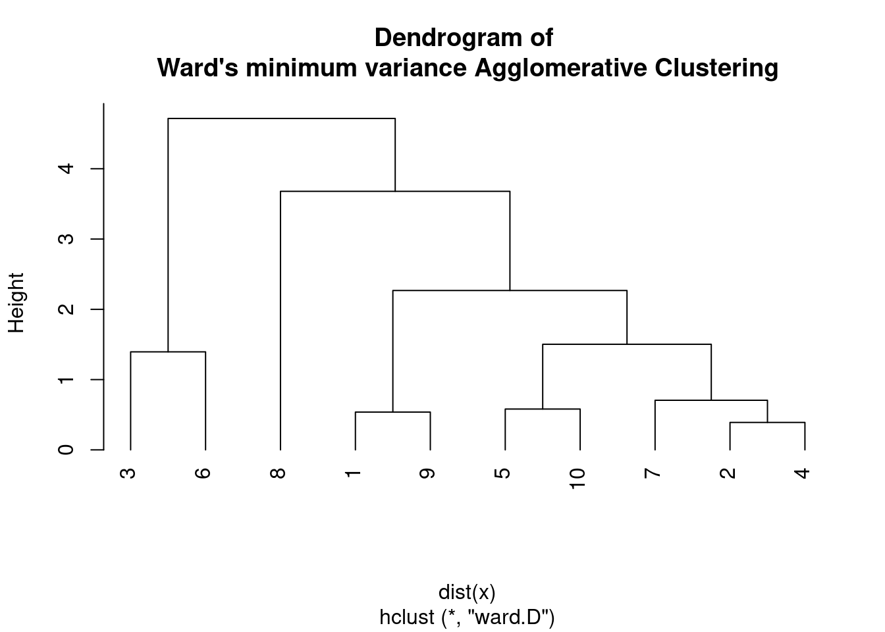
On the other hand, Ward D2 uses the sum of squared differences from the centroid as the criterion to minimize when merging clusters, which is equivalent to minimizing the increase in the sum of squared deviations from the centroid of the combined cluster.
# perform Ward's minimum variance clustering
hc <- hclust(dist(x), method = "ward.D2")
# plot the dendrogram
plot(hc, main = "Dendrogram of \nWard's D2 minimum variance Agglomerative Clustering",
hang = -1)In other words, Ward D2 considers the distance between the centroids of the clusters being merged, while Ward D considers the distance between the individual data points and the mean of the merged cluster.
Empirically, Ward D2 tends to produce more compact and spherical clusters, while Ward D may be more sensitive to outliers and can produce elongated or irregularly shaped clusters. However, the choice of Ward D or Ward D2 may depend on the specific characteristics of the data and the research question.
11.6 Deciding on cut-off points
Deciding the cutoff point to consider cluster groups is an important step in hierarchical clustering analysis. The cutoff point determines the number of clusters to consider and can have a significant impact on the interpretation of the results.
Some common methods for determining the cutoff point are:
- Dendrogram visual inspection: One approach is to visually inspect the dendrogram and identify a point where the branches start to become long and sparse. This point represents a natural breaking point in the hierarchy and can be used as the cutoff point.
- Elbow method: The elbow method involves plotting a measure of cluster quality, such as the within-cluster sum of squares, against the number of clusters. The point where the plot starts to level off is considered the elbow point and can be used as the cutoff point.
- Gap statistic: The gap statistic compares the within-cluster sum of squares for the actual data to the expected within-cluster sum of squares for a null reference distribution. The optimal number of clusters is the one with the largest gap statistic.
- Domain-specific knowledge: In some cases, domain-specific knowledge or prior research can provide guidance on the appropriate number of clusters to consider.
11.7 Playing with real data: the Doubs fish species data
Let us compare the single and complete linkage clustering methods using the Doubs fish species data.
Species data were already Hellinger-transformed. The cluster analysis requiring similarity or dissimilarity indices, the first step will be to generate the Hellinger distance indices.
# Generates the distance matrix from Hellinger transformed
# data
spe.dhel <- vegdist(spe.hel, method = "euclidean")
# See difference between the two matrices
head(spe.hel) # Hellinger-transformed species data## CHA TRU VAI LOC OMB BLA HOT TOX VAN CHE BAR SPI
## 1 0 1.0000000 0.0000000 0.0000000 0 0 0 0 0.0000000 0.0000000 0 0
## 2 0 0.6454972 0.5773503 0.5000000 0 0 0 0 0.0000000 0.0000000 0 0
## 3 0 0.5590170 0.5590170 0.5590170 0 0 0 0 0.0000000 0.0000000 0 0
## 4 0 0.4364358 0.4879500 0.4879500 0 0 0 0 0.0000000 0.2182179 0 0
## 5 0 0.2425356 0.2970443 0.2425356 0 0 0 0 0.3834825 0.2425356 0 0
## 6 0 0.3779645 0.4364358 0.4879500 0 0 0 0 0.2182179 0.3086067 0 0
## GOU BRO PER BOU PSO ROT CAR TAN BCO PCH GRE
## 1 0.0000000 0.0000000 0.0000000 0 0 0.0000000 0 0.0000000 0 0 0
## 2 0.0000000 0.0000000 0.0000000 0 0 0.0000000 0 0.0000000 0 0 0
## 3 0.0000000 0.2500000 0.0000000 0 0 0.0000000 0 0.0000000 0 0 0
## 4 0.2182179 0.3086067 0.3086067 0 0 0.0000000 0 0.2182179 0 0 0
## 5 0.2425356 0.3429972 0.3429972 0 0 0.2425356 0 0.2970443 0 0 0
## 6 0.2182179 0.2182179 0.2182179 0 0 0.0000000 0 0.3086067 0 0 0
## GAR BBO ABL ANG
## 1 0.0000000 0 0 0
## 2 0.0000000 0 0 0
## 3 0.0000000 0 0 0
## 4 0.0000000 0 0 0
## 5 0.3834825 0 0 0
## 6 0.2182179 0 0 0head(spe.dhel) # Hellinger distances among sites## [1] 0.8420247 0.9391305 1.0616631 1.2308244 1.1153793 0.9391305Use hclust() to compute both single and complete linkage clustering algorithms for this data:
spe.dhel.single <- hclust(spe.dhel, method = "single")
plot(spe.dhel.single)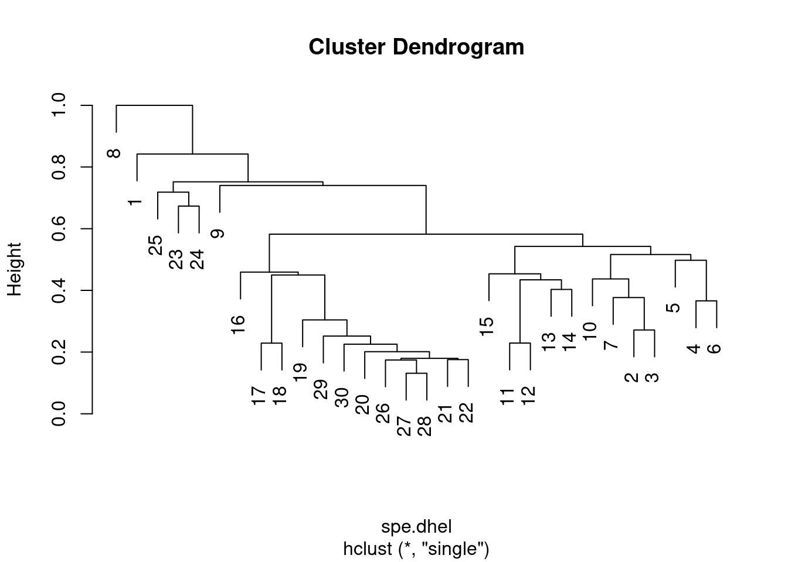
spe.dhel.complete <- hclust(spe.dhel, method = "complete")
plot(spe.dhel.complete)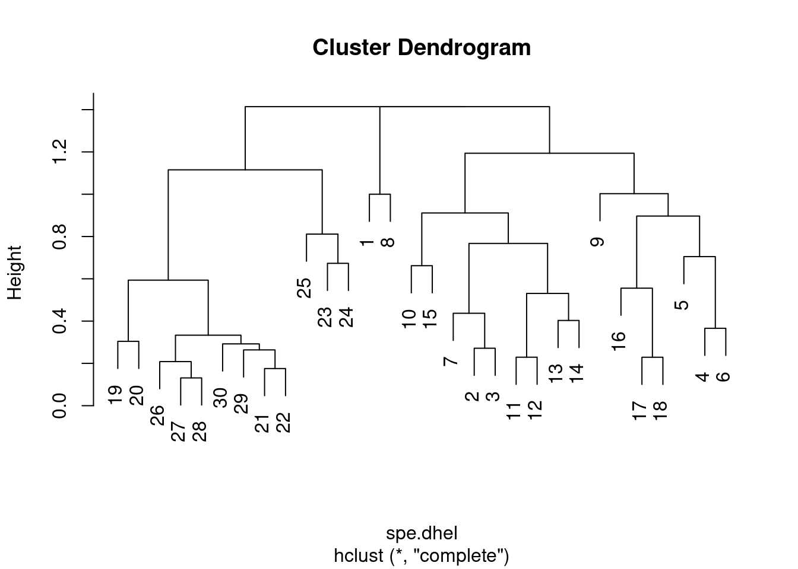
Are there big differences between the two dendrograms?
In single linkage clustering, chains of objects occur (e.g. 19, 29, 30, 20, 26, etc.), whereas more contrasted groups are formed in the complete linkage clustering.
Again, it is possible to generate a Ward’s minimum variance clustering with hclust(). However, the dendogram shows squared distances by default. In order to compare this dendrogram to the single and complete linkage clustering results, one must calculate the square root of the distances.
# Perform Ward minimum variance clustering
spe.dhel.ward <- hclust(spe.dhel, method = "ward.D2")
plot(spe.dhel.ward)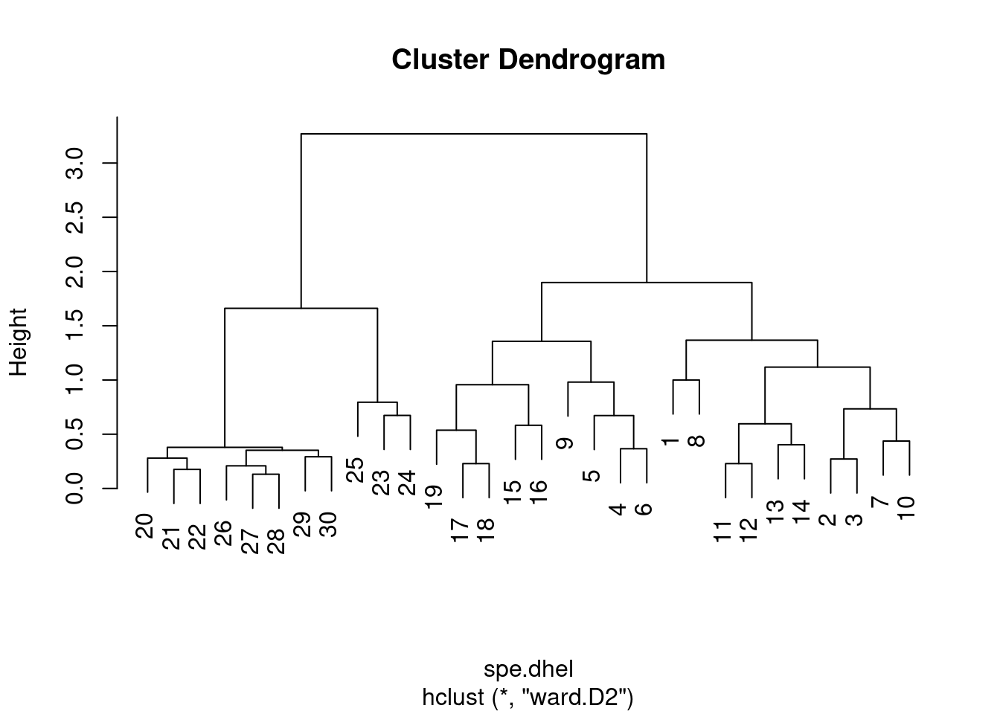
# Re-plot the dendrogram by using the square roots of the
# fusion levels
spe.dhel.ward$height <- sqrt(spe.dhel.ward$height)
plot(spe.dhel.ward)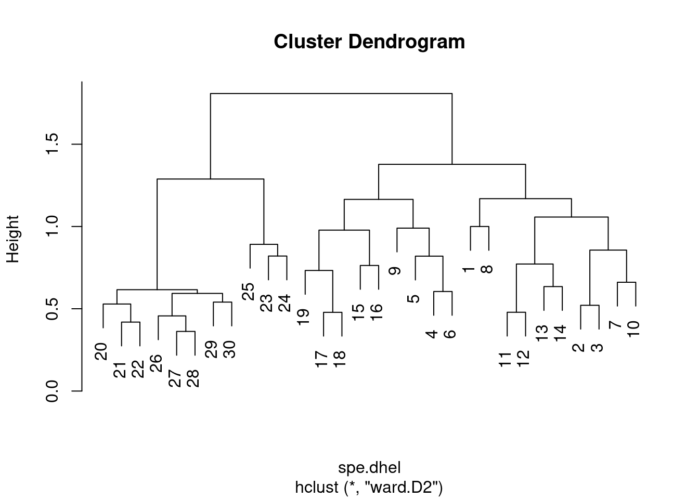
plot(spe.dhel.ward, hang = -1) # hang=-1 aligns all objets on the same line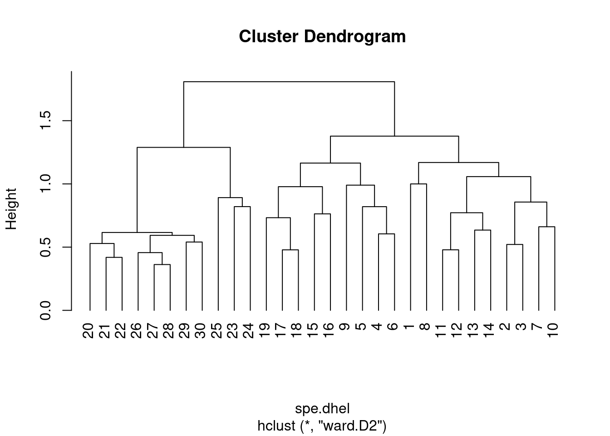
One must be careful in the choice of an association measure and clustering method in order to correctly address a problem.
What are you most interested in: gradients? contrasts between objects?
Moreover, the results should be interpreted with respect to the properties of the method used. If more than one method seems suitable to an ecological question, computing them all and compare the results would be the way to go.
As a reminder, clustering is not a statistical method, but further steps can be taken to identify interpretative clusters (e.g. where to cut the tree), or to compute clustering statistics. Clustering can also be combined to ordination in order to distinguish groups of sites. These go beyond the scope of this workshop, but see Borcard et al. 2011 for more details.
We will now dive into ordination methods.
Ordination is a method used to visualize and explore relationships among variables or observations in a multivariate dataset. The goal of ordination is to represent the data in a lower-dimensional space, such as a two-dimensional or three-dimensional plot, while preserving the overall structure of the data. Ordination can be used to explore patterns and relationships among variables or observations, to identify important variables or patterns in the data, or to visualize the results of other analyses.
The first group of ordination methods we will explore are the unconstrained ordinations.